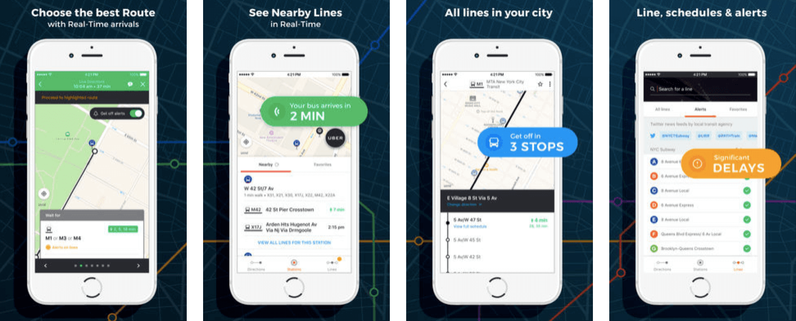
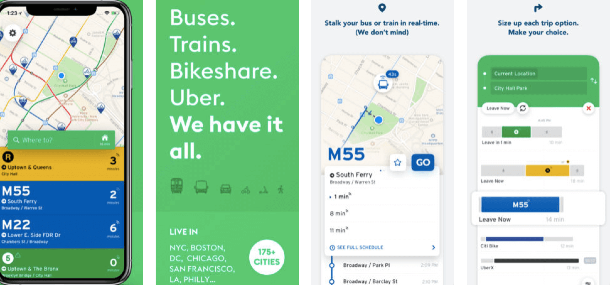

Background
Though the concept of public transit trackers isn’t new, it offers up a wealth of opportunities to work with imperfect data that is incredibly important to the users of a given app or service. Few things will make people run faster than discovering their bus is a mere 2 minutes away from the bus stop. BusyBus is a regional bus service that serves thousands of commuters in a large city.
Overview
The Problem: Displaying the Right Information
Due to expansion, numerous bus lines have been recently added and many of those lines stop at the same bus stop. BusyBus users want to know what the next arriving bus is and how much time they have to get to the bus stop.
The Solution: Highlighting Key Datapoints
Transit tracker users need to be able to access a lot of pieces of information, but only a few are immediately relevant. BusyBus stays clean and easy-to-use through hierarchical organization of information and highlighting of key datapoints while allowing for users to dive deeper when necessary.
Tools Used

COMPETITIVE Analysis
I researched several public transit applications, including  Moovit,
Moovit,  Transit, and
Transit, and  Routesy.
Routesy.
Moovit and Transit
Moovit and Transit provide a feature similar to Google Maps where you can enter a starting and ending destination. and the application will provide several transit options, sorted by time to arrival. Both applications offer real-time tracking, which allows users to see where their busses or trains are on a map.
 Routesy

I personally use Routesy for my transit needs. I like that it has all transit options in one place and allows you to search both by nearby stops and by line.
You can also bookmark favorites and see the arrival times of the next few buses for a particular line, in case you miss the next one.
However, the lack of a real-time map visual has caused problems where I’ve actually gotten on trains heading in the opposite direction.
Defining Key Issues
Living in San Francisco where we have multiple transit options, many of which stop at the same location, and having tried multiple public transit trackers myself, one thing I can say for certain is that there aren’t many that get it right.
Before jumping into design, I laid out the key goals that I wanted my application to accomplish:
- Help users identify which bus stops they are closest to
- Help users identify when the next bus is arriving
- For bus stops with multiple lines running through, help users identify which lines are approaching
- Allow users to track their busses on a map in real-time, like Uber or Lyft
Final DESIGN

Home Screen
On the home screen, users can toggle between seeing what stops are nearby (including walking distance), searching for a specific line, and their favorites. When searching nearby stops, users can see their relative location on a map as well as which busses serve which stops. To see a detailed view of a particular stop, users can tap the left arrow to navigate to the bus stop display view.
Bus Stop Display
In the bus stop view, each of the bus lines that serve the stop, are displayed in a scrollable list in chronological order of next arrival time. Showing the next 3 bus arrival times allows users to plan their schedule in case they can't make it to the stop by the next arrival time.
The user has the option to change the direction they are traveling in (Eastbound vs. Westbound vs. Northbound vs. Southbound, etc.) by tapping the drop down arrow in the header. Changing the direction will refresh the screen and populate the proper times for buses traveling in the opposite direction.
Live Map Detail
Tapping the carrot on the right hand side of each bus line will populate a live map drop-down showing the real-time location of the bus and intended route, as well as the user's current location.
In order to avoid confusion about which bus stop to walk to while still highlighting the different stops on the route, the correct stop is enlarged and tagged with a pin showing how far away the nearest bus is for that particular line.
The user can tap on other stops to view information and arrival times, but as this information is secondary, it is hidden from the display view to avoid clutter and unnecessary overload of information.